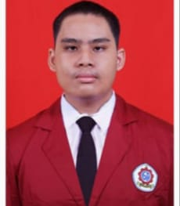
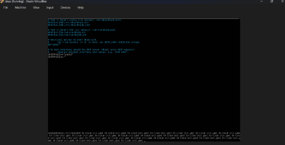
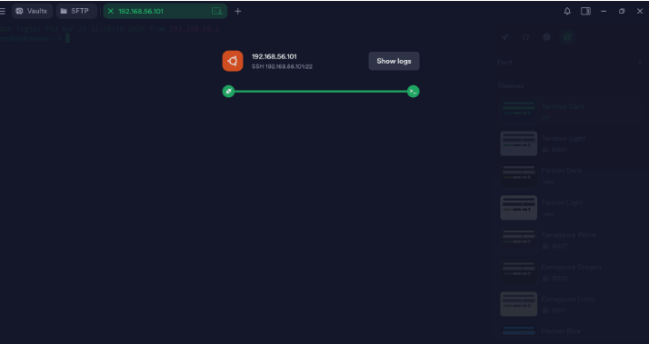
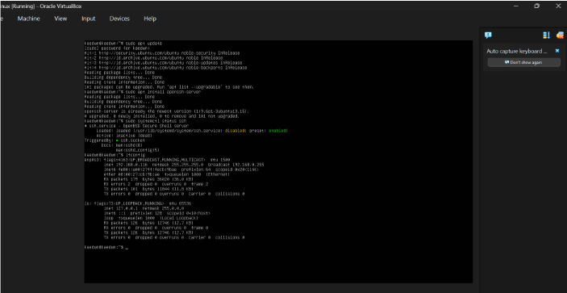
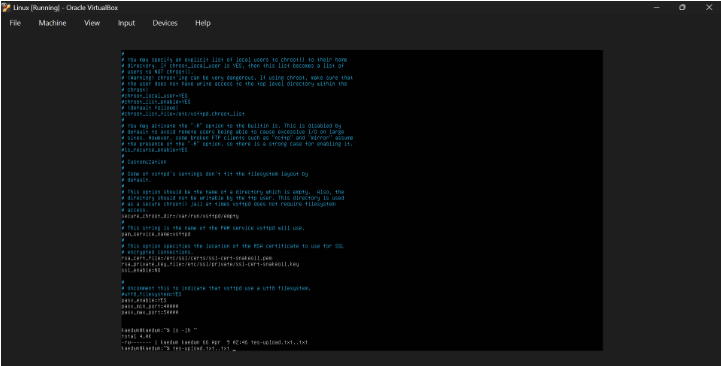

Saya tertarik pada konfigurasi jaringan, teknologi, troubleshoot perangkat keras, dan network security.
Hubungi Saya
| Nama | : Erland Fadhil Hisyam |
| Sekolah | : SMK Bina Informatika Bintaro |
| Kelas | : X / 10 |
| Jurusan | : Teknik Komputer dan Jaringan (TKJ) |
| Cita-cita | : Cyber Security |
Sebagai siswa kelas X, saat ini saya belum mengambil program PKL. Fokus utama saya sekarang adalah membangun fondasi yang kuat di bidang TKJ. Saya aktif mempelajari dasar-dasar administrasi server, konfigurasi perangkat jaringan, dan mendalami konsep Cyber Security secara mandiri agar benar-benar siap saat terjun ke industri atau PKL di kelas sebelas nanti.

Projek administrasi jaringan untuk membangun layanan alokasi IP otomatis menggunakan DHCP Server (isc-dhcp-server) di Ubuntu Server. Projek ini mencakup konfigurasi range IP address, subnet mask, default gateway, hingga DNS server untuk client di jaringan lokal. Implementasi ini mempermudah manajemen jaringan karena client dapat terhubung secara plug-and-play tanpa perlu konfigurasi IP manual.
Lihat Projek →
Projek penguatan keamanan jaringan melalui konfigurasi Remote Server berbasis SSH Key pada Ubuntu Server. Projek ini mengimplementasikan autentikasi menggunakan sepasang kunci kriptografi (Public & Private Key) yang dikelola melalui Termius sebagai SSH client. Untuk meminimalisir risiko serangan brute force, login berbasis password dinonaktifkan total, sehingga server hanya bisa diakses secara aman oleh perangkat yang memegang kunci privat yang sah.
Lihat Projek →
Projek administrasi sistem jaringan untuk melakukan konfigurasi remote server berbasis SSH menggunakan Ubuntu Server di Virtual Machine (VirtualBox) dengan PuTTY sebagai client side. Projek ini mencakup proses instalasi paket openssh-server, manajemen service SSH, konfigurasi network adapter (Host-Only Adapter), serta pengujian akses remote jarak jauh via Port 22 menggunakan autentikasi password.
Lihat Projek →
Projek administrasi jaringan untuk membangun layanan file sharing terpusat menggunakan FTP Server (vsftpd) di Ubuntu Server. Projek ini mencakup konfigurasi hak akses pengguna (user privileges), pembatasan direktori (chroot), serta manajemen direktori upload dan download. Implementasi ini memungkinkan transfer data antar perangkat di jaringan lokal berjalan lebih cepat, terstruktur, dan efisien.
Lihat Projek →Ada pertanyaan atau ingin bekerja sama? Silahkan hubungi saya melalui kontak di bawah ini: